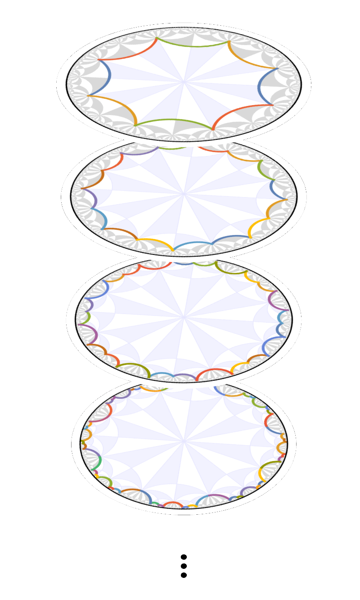

About#
Construction of hyperbolic lattices#
When constructing cell, model and supercell model graphs, HyperCells does not only provide the graph itself but includes a lot of additional information. This includes:
labels for the Schwarz triangles as elements of the (proper) triangle group
labels for the vertices (or maximally symmetric Wyckoff positions) in terms of the label for the corresponding Schwarz triangle and which of the vertices of the Schwarz triangle it is
labels for the edges in terms how they are obtained, e.g., Schwarz triangle, vertex of an underlying cell graph, etc.
translation associated with each edge in the graph, i.e., which unit cells it connects
oriented faces of the cell graph
unit-cell boundary segments and their identification for periodic boundary conditions
For supercell graphs, the embedding of the primitive cell graph and the corresponding homomorphism between the translation groups are also provided. For more details, see the documentation of the package.
The supercell method#
Models defined on hyperbolic lattices can be theoretically described by a non-Abelian generalization of the Bloch theorem. However, practical approaches for directly constructing the associated Bloch states are still lacking. The supercell method overcomes the challenges posed by noncommuting translations by deducing the Bloch states from the Abelian Bloch states obtained on a sequence of progressively larger symmetric supercells. This enables significant progress towards an analytical description of hyperbolic lattice models in momentum space. Application of this method is greatly simplified by our two software packages, HyperCells and HyperBloch.
We use computational group theory to create a sequence of progressively larger unit cells, each formed as a symmetric aggregate of smaller unit cells. Subsequently, we apply the previously established Abelian hyperbolic band theory — which ignores the noncommutativity of translations — to those growing supercells and obtain a converging description of the infinite lattice. The method was introduced in Phys. Rev. Lett. 131, 226401 (2023). Practically, we need to perform the following steps:
An introduction to the topic in general and these steps specifically (using worked-out examples), can be found in Dr. Patrick M. Lenggenhager’s PhD thesis.
Visualization with HyperBloch#
In order to simplify working with hyperbolic lattices, in particular defining tight-binding models, the HyperBloch Mathematica package provides several visualization tools. These include tools for visualizing the lattice, high-symmetry positions (maximally symmetric Wyckoff positions), specific vertices, edges, faces, as well as symmetry operations and unit cells.
The tutorials will introduce most of this functionality and a complete overview can be found in the documentation of the package, i.e., in the Mathematica help center.